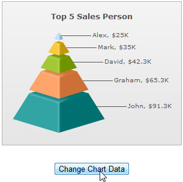
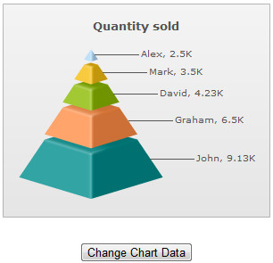

FusionWidgets XT uses FusionCharts JavaScript Class that takes care of all the products of FusionCharts XT Suite including FusionWidgets XT.
FusionCharts JavaScript Class offers a number of functions for providing data to chart and updating chart data. FusionCharts JavaScript Class supports data in XML or JSON format. The data can be assigned as URL or as String. Additionally, FusionCharts JavaScript Class provides separate functions to update data for real-time charts and gauges.
In this page we will discuss:
- How to provide data to a chart at the time of rendering
- How to update data of an already rendered chart
- How to update real-time charts and gauges
Code examples discussed in this section are present in Download Package > Code > JavaScript > Basics folder and in Download Package > Code > RealTime folder.
You can provide data to the chart using various methods as shown below :
Using XML file as the chart's data source
<html>
<head>
<title>My First chart using FusionWidgets</title>
<script type="text/javascript" src="Charts/FusionCharts.js">
</script>
</head>
<body>
<div id="chartContainer">Chart will load here!</div>
<script type="text/javascript"><!--
var myChart = new FusionCharts( "Charts/Pyramid.swf",
"myChartId", "400", "350", "0", "1" );
myChart.setXMLUrl("Data.xml");
myChart.render("chartContainer");
// -->
</script>
</body>
</html>

In the above code, chart data is provided through an external XML file whose URL is provided using the setXMLUrl() function.
Click here to see implementation of other functions that do the same »
myChart.setChartData("Data.xml" , "xmlurl");
...
myChart.setChartDataUrl("Data.xml" , "xml");
FusionCharts can also use setDataURL()to provide chart data. This function has been deprecated.
Using XML String as the chart data source
In case you have XML data as String in JavaScript, you can use the setXMLData() function to provide this XML String as shown in the code below:
// String containing chart XML var strXML = ""<chart><set value='100' label='Week 1'/>...</chart>""; myChart.setXMLData(strXML);
Click here to see implementation of other functions that do the same »
myChart.setChartData(strXML , "xml");FusionCharts can also use setDataXML()to provide chart data. This function has been deprecated.
Using JSON URL as the chart data source
In case you are feeding JSON data to the chart from a URL, you can use the setJSONUrl() function. See code below:
myChart.setJSONUrl("Data.json");
Click here to see the implementation of other functions that do the same »
myChart.setChartData("Data.json" , "jsonurl");
...
myChart.setChartDataUrl("Data.json" , "json");
Using JSON Object or JSON stored as String in JavaScript
In case you are using JSON Object or JSON as String to be fed to chart, you can use setJSONData() function. See code below:
var objJSON = { chart : { ... } , data : { ... } ... } ; // Chart JSON data
myChart.setJSONData( objJSON );
var strJSON = "{ chart : { ... } , data : { ... } ... }" ; // chart data as JSON String
myChart.setJSONData( strJSON );
Click here to see implementation of other functions that do the same »
myChart.setChartData(objJSON , "json"); ... myChart.setChartData(strJSON , "json");
The code samples here use URL of static XML/JSON files. Ideally, you will be using server-side scripts to dynamically generate XML or JSON data, rather than build JSON or XML files. So, you can provide the URL of the script, which relays dynamically generated data to the chart.
List of functions that help in providing data to chart
Here is the list of FusionCharts JavaScript functions which can be used for providing data to the chart in XML or JSON format:
- setXMLUrl(url) - This function specifies the URL of the XML data source. The XML is relayed to the chart through the provided URL
- setXMLData(data) - This function provides data to the chart in form of an XML string. The XML String is passed as data parameter
- setJSONUrl(url) - This function specifies the URL of the JSON data source. The JSON is relayed to the chart through this URL
- setJSONData(data) - This function provides data to the chart in form of a JSON String. The JSON String is passed as data parameter
- setChartDataUrl(url, format) - This function takes URL of the data source. It takes two parameters url and format. The format parameter accepts either xml or json. As per the value of the format parameter the function accepts data in the following manner:
- When the format is xml, the function will look for the URL of xml data from url parameter
- When the format is json, the function will look for the URL of JSON data from url parameter
- setChartData(data, format) - This function sets chart data. It takes two parameters. The first is the Data String itself. The second parameter, format, takes one of the four values - xml, xmlurl, json, jsonurl. As per the value of format parameter the function accepts data in the following manner:
- When the format is xml, the function will look for XML string in data parameter
- When the format is json, the function will look for JSON object or JSON string in data parameter
- When the format is xmlurl, the function will look for URL of the XML data in data parameter
- When the format is jsonurl, the function will look for the URL of JSON data in data parameter
- The deprecated functions are given below. While these are backward compatible and still work, going forward, we do not recommend using these.
- setDataURL(url) - This function specifies the URL of the XML data source. The URL is relayed to the chart through the provided URL.
- setDataXML(data) - This function provides data to the chart in form of XML string. The XML String is passed as data parameter.
Providing chart data using compact rendering method
Apart from the above mentioned functions, data can be provided to the chart using compact rendering method. Using this method you can pass your data as XML/JSON URL or String. All you need to do is provide the settings correctly. The code snippets below shows how to use the compact rendering mode:
Using XML file as the chart data source
var myChart = FusionCharts.render( "Charts/Pyramid.swf", "myChartId", "400", "300", "ChartContainer", "Data.xml" , "xmlurl" );
Using JSON file as the chart data source
var myChart = FusionCharts.render( "Charts/Pyramid.swf", "myChartId", "400", "300", "ChartContainer", "Data.json" , "jsonurl" );
Using XML String as the chart data source
var myChart = FusionCharts.render( "Charts/Pyramid.swf", "myChartId", "400", "300", "ChartContainer", strXML , "xml" );
Using JSON Object as the chart data source
var objJSON = { chart : { ... } , data : { ... } ... } ; // chart data as JSON object
var myChart = FusionCharts.render( "Charts/Pyramid.swf", "myChartId",
"400", "300", "ChartContainer", objJSON , "json" );
Using JSON String as the chart data source
var strJSON = "{ chart : { ... } , data : { ... } ... }" ; // chart data as JSON String
var myChart = FusionCharts.render( "Charts/Pyramid.swf", "myChartId",
"400", "300", "ChartContainer", strJSON , "json" );
For more information on compact rendering mode read Constructor methods.
Let's render a sample chart and then change its data (see code below). The chart which renders initially shows sales revenue figures. However, its data is changed to show sales quantity when a button is clicked. We have separate XML files, The code is as follows:
<html>
<head>
<title>Update Chart data</title>
<script type="text/javascript" src="../../Charts/FusionCharts.js">
</script>
</head>
<body>
<div id="chartContainer">Chart will load here!</div>
<script type="text/javascript"><!--
var myChart = new FusionCharts( "../../Charts/Pyramid.swf",
"myChartId", "400", "300", "0", "1" );
myChart.setXMLUrl("RevenueData.xml");
myChart.render("chartContainer");
function changeData()
{
var chartReference = FusionCharts("myChartId");
chartReference.setXMLUrl("QunatityData.xml");
}
// -->
</script>
<input type="button" onClick="changeData();" value="Change Chart Data">
</body>
</html>
In the above code we have created a chart using sales revenue figures, the data for which is in RevenueData.xml. We have created an HTML button which calls a JavaScript function changeData(). In this function we have :
- Tracked the reference of the chart using FusionCharts("myChartId")
- Updated the chart using setXMLData() function
- Passed "QuantityData.xml", which contains sales quantity data, to setXMLData()
The charts will look as follows:
|  |  |
| Chart with Sales Revenue data. Click 'Change Chart Data' button |
Chart now gets updated with Sales Quantity data |
See it live!
Other Methods of updating chart data
To update an existing chart with data, all you need to do is get the chart reference and a function from the list provided above. All of the functions listed above can then be used for updating the data of an existing chart. Following code snippets illustrate the process:
var chartReference = FusionCharts("myChartId");
chartReference.setXMLUrl("newData.xml");
var chartReference = FusionCharts("myChartId");
chartReference.setJSONUrl("updatedJSON.json");
var chartReference = FusionCharts.items["myChartId"];
chartReference.setXMLData(newXMLString);
//newXMLString is a JavaScript String variable containing the chart XML
var chartReference = FusionCharts.items["myChartId"];
chartReference.setJSONData(objJSON);
//objJSON is an Object containing chart JSON
var chartReference = FusionCharts.items["myChartId"];
chartReference.setJSONData(strJSON);
//strJSON is a String which contains chart JSON
Click here to see implementation of other similar functions »
var chartReference = FusionCharts.items["myChartId"];
...
chartReference.setChartDataUrl("updatedXML.xml", "xml");
...
chartReference.setChartDataUrl("updatedJSON.json", "json");
...
chartReference.setChartData("updatedXML.xml", "xmlurl");
...
chartReference.setChartData("updatedJSON.json", "jsonurl");
...
chartReference.setChartData(strXML, "xml");
...
chartReference.setChartData(objJSON, "json");
...
chartReference.setChartData(strJSON, "json");
Deprecated Functions
myChart.setDataURL("newData.xml");
Please use setXMLUrl() instead of setDataURL().
var chartReference = getChartFromId("myChartId");
chartReference.setDataXML(newXMLString);
//newXMLString is a JavaScript String variable containing the chart XML
Please use FusionCharts(DOMId) instead of getChartFromId(DOMId) and use setXMLData() instead of setDataXML().
var chartReference = FusionCharts.getObjectReference("myChartId");
chartReference.setDataURL("newData.xml");
Please use setXMLUrl() instead of setDataURL().
myChart.setDataXML(newXMLString); //new XMLString is a string containing chart XML
Please use setXMLData() instead of setDataXML().
All the real-time gauges and data-streaming charts can be updated with real-time data using the following JavaScript functions:
- feedData
- setData
- setDataForId (only for Angular gauge and Horizontal Linear gauge)
To use any of these functions, you need to refer to the chart and then call any of these functions. To refer to a chart, you can use the DOMID of the chart and pass it using any of the following ways:
var chartRef = FusionCharts("myChartId");
or
var chartRef = FusionCharts.items["myChartId"];
Let's now see how each of these functions work:
feedData
This function feeds real-time data to real-time charts and gauges using JavaScript. The function accepts a string containing the real-time data.
Following code snippets illustrate the use of feedData function in various charts and gauges:
- Real-time Column chart with single data series
var chartReference = FusionCharts("myChartId"); chartReference.feedData("&value=34&label=1 Jan 2012");The real-time data format for data-streaming charts is discussed here.
Click here to see how this is implemented in a sample.
- Real-time Column chart with multiple data series
var chartReference = FusionCharts("myChartId"); chartReference.feedData("&label=1 Jan 2012&value=23|43|45");The real-time data format for data-streaming charts is discussed here.
- Real-time LED gauge
var chartReference = FusionCharts("myChartId"); chartReference.feedData("&value=51");The real-time data format for LED and other real-time gauges is discussed here.
- Real-time Angular gauge with single dial
var chartReference = FusionCharts("myChartId"); chartReference.feedData("&value=89");The real-time data format for Angular gauge is discussed here.
- Real-time Angular gauge with multiple dials
var chartReference = FusionCharts("myChartId"); chartReference.feedData("&value=92|70");The real-time data format for Angular gauge with multiple dials is discussed here.
- Real-time Angular gauge with multiple dials having IDs
var chartReference = FusionCharts("myChartId"); chartReference.feedData("&CPU1Temp=23&CPU2Temp=34");The real-time data format for Angular gauge with dial IDs is discussed here.
setData
This function also feeds real-time data to real-time gauges using JavaScript. In single value gauges (LEDs, Bulb, Cylinder, Thermometer) The function takes a numeric value as the parameter. For Angular gauge and Horizontal Linear gauge, this function accepts two parameters - the dial number and the value to update.
Following code snippets illustrate the use of setData function in various gauges:
- Real-time LED gauge
var chartReference = FusionCharts("myChartId"); chartReference.setData(90);
- Real-time Angular gauge with single dial
var chartReference = FusionCharts("myChartId"); chartReference.setData(1, 89); // Update the first dial with 89
- Real-time Angular gauge with two dials
var chartReference = FusionCharts("myChartId"); chartReference.setData(1, 92); // Update the first dial with 92 chartReference.setData(2, 70); // Update the second dial with 70
setDataForId
This function feeds real-time data to Angular gauge or Linear gauge using JavaScript. This function is required when you have set IDs to dials or pointers in these gauges. The function takes the dial ID as the first parameter and a numeric value (the updated data) as the second parameter.
Following code snippets illustrate the use of setDataForId function:
- Real-time Angular gauge with single dial
var chartReference = FusionCharts("myChartId");
chartReference.setDataForId("CPU1Temp", 89);var chartReference = FusionCharts("myChartId");
chartReference.setDataForId("CPU1Temp", 92);
chartReference.setDataForId("CPU2Temp", 70); var chartReference = FusionCharts("myChartId");
chartReference.setDataForId("CPU1Temp", 89);var chartReference = FusionCharts("myChartId");
chartReference.setDataForId("CPU1Temp", 92);
chartReference.setDataForId("CPU2Temp", 70);
Your existing code (i.e. code used prior to FusionWidgets XT) will continue to work as before.